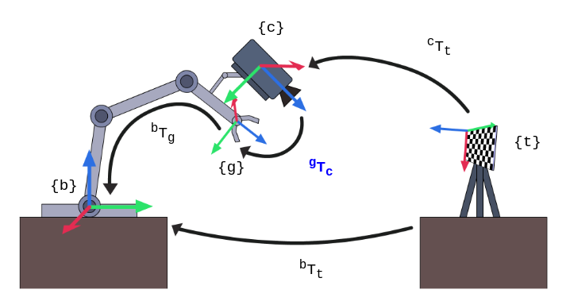
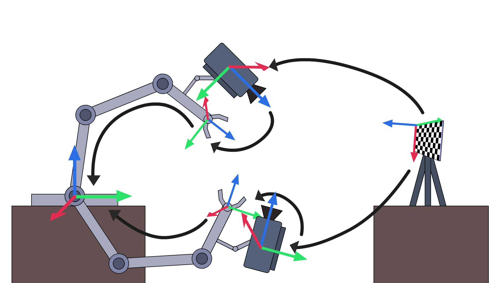
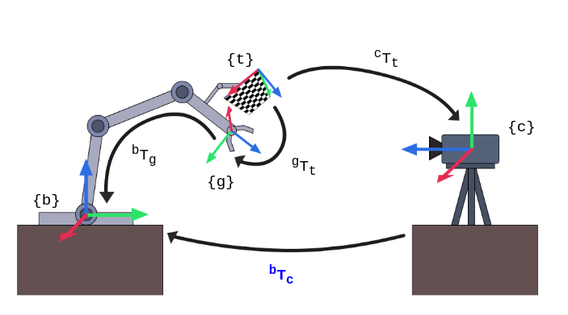
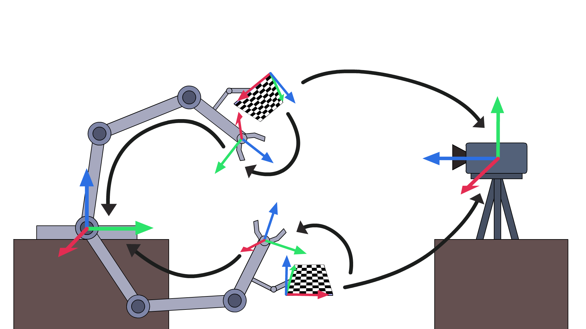
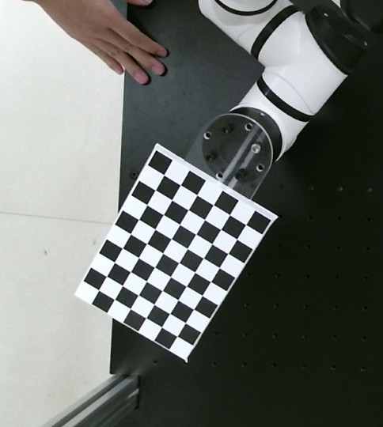

手眼标定(外参标定) *¶
一、手眼标定的原理¶
图例说明：
- {b}：base基座标系
- {g}：gripper抓手坐标系
- {t}：target标定板坐标系
- {c}：camera相机坐标系
正交矩阵的特性：
T^{-1} = T^T
^tT_c = (^cT_t)^{-1} = (^cT_t)^T
^gT_b = (^bT_g)^{-1} = (^bT_g)^T
眼在手上¶
eye in hand，眼在手上，相机移动 
^bT_t = {^bT_g}^{(1)} \cdot {^gT_c} \cdot {^cT_t}^{(1)}
^bT_t = {^bT_g}^{(2)} \cdot {^gT_c} \cdot {^cT_t}^{(2)}
联立以上两个等式：
{^bT_g}^{(1)} \cdot {^gT_c} \cdot {^cT_t}^{(1)} = {^bT_g}^{(2)} \cdot {^gT_c} * {^cT_t}^{(2)}
把等式两边进行移动：
(^bT_g^{(2)})^{-1} \cdot {^bT_g}^{(1)} \cdot {^gT_c} = {^gT_c} \cdot {^cT_t}^{(2)} \cdot (^cT_t^{(1)})^{-1}
即解决：AX=XB问题

眼在手外¶
eye to hand，眼在手外，相机固定

^gT_t = ^gT_b^{(1)} \cdot ^bT_c \cdot ^cT_t^{(1)}
^gT_t = ^gT_b^{(2)} \cdot ^bT_c \cdot ^cT_t^{(2)}
联立以上两个等式：
^gT_b^{(1)} \cdot ^bT_c \cdot ^cT_t^{(1)} = {^gT_b^{(2)}} \cdot ^bT_c \cdot ^cT_t^{(2)}
把等式两边进行移动：
(^gT_b^{(2)})^{-1} \cdot ^gT_b^{(1)} \cdot ^bT_c = {^bT_c} \cdot ^cT_t^{(2)} \cdot (^cT_t^{(1)})^{-1}
即解决：AX=XB问题

二、手眼标定的操作¶

- 将标定板固定在机械臂末端
- 开启机械臂，开启摄像头
- 在距离摄像头40、60、80cm的距离上，在摄像头可见范围内，使用各种角度各拍照15-20张照片，一共45-60张。
- 同时保存照片以及对应拍照时机械臂位姿
- 准备好之前标定的相机内参
- 执行手眼标定API，得到相机在基坐标系的表达（旋转矩阵R+平移向量t）
三、自己动手实现手眼标定及验证¶
- 从文件及图片读取照片
// Created by poplar on 19-7-25.
#include <iostream>
#include <opencv2/core.hpp>
#include <opencv2/calib3d.hpp>
#include "boost/filesystem.hpp" // includes all needed Boost.Filesystem declarations
#include <boost/algorithm/string/predicate.hpp>
#include <opencv2/imgcodecs.hpp>
#include "tinyxml/tinyxml2.h"
#include <map>
// Eigen 部分
#include <Eigen/Core>
// 稠密矩阵的代数运算（逆，特征值等）
#include <Eigen/Dense>
// Eigen 几何模块
#include <Eigen/Geometry>
#include <rw/math/Rotation3D.hpp>
#include <rw/math/Vector3D.hpp>
#include <rw/math/RPY.hpp>
#include <opencv/cxeigen.hpp>
#include <opencv/cv.hpp>
#include "utils/Rotation3DUtils.h"
using namespace boost::filesystem; // for ease of tutorial presentation;
// a namespace alias is preferred practice in real code
using namespace tinyxml2;
using namespace Eigen;
using namespace cv;
using namespace std;
using namespace rw::math;
// Eigen
// OpenCV
// RobWork
const string prefix_path = "/home/ty/Workspace/Robot/calibration-single";
const string intrinsicsPath = prefix_path + "/CaliResult/3DCameraInCailResult.xml";
const string pic_dir_path = prefix_path + "/ImageFromCamera";
const string exten = "bmp";
const string extrinsic_params = prefix_path + "/extrinsic_input_param.xml";
// const string extrinsic_params = "/home/poplar/Lesson/Cobot/Aubo/calibration-single/extrinsic_input_param_t.xml";
const string exCailFilePath = prefix_path + "/CaliResult/3DCameraExCailResult.xml";
enum Pattern {
CHESSBOARD, CIRCLES_GRID, ASYMMETRIC_CIRCLES_GRID
};
void printPose(const vector<double> &pose);
void calcChessboardCorners(const Size &boardSize, float squareSize, vector<Point3f> &corners,
Pattern patternType = CHESSBOARD) {
corners.resize(0);
switch (patternType) {
case CHESSBOARD:
case CIRCLES_GRID:
for (int i = 0; i < boardSize.height; i++) // 9
for (int j = 0; j < boardSize.width; j++) // 6
corners.emplace_back(float(j * squareSize),
float(i * squareSize), 0);
break;
case ASYMMETRIC_CIRCLES_GRID:
for (int i = 0; i < boardSize.height; i++)
for (int j = 0; j < boardSize.width; j++)
corners.emplace_back(float((2 * j + i % 2) * squareSize),
float(i * squareSize), 0);
break;
default:
CV_Error(Error::StsBadArg, "Unknown pattern type\n");
}
}
/**
* 通过图片集合 填充 旋转矩阵&平移矩阵
* @param R_target2cam
* @param t_target2cam
* @param imgPaths
*/
bool fillFromImages(vector<Mat> &R_target2cam, std::vector<Mat> &t_target2cam, std::vector<path> &imgPaths) {
const Size patternSize(6, 9);
const float squareSize = 20;
//! [compute-poses]
std::vector<Point3f> objectPoints;
// [
// [0, 0 , 0]
// [0, 20, 0]
// [0, 40, 0]
// ...
// [20, 0, 0]
// ...
// ]
calcChessboardCorners(patternSize, squareSize, objectPoints);
// 通过内参进行矫正
// 检测角点
// 计算变换矩阵（旋转矩阵+平移矩阵）
cv::FileStorage fs(intrinsicsPath, FileStorage::READ);
Mat cameraMatrix, distCoeffs;
fs["cameraMatrix"] >> cameraMatrix;
fs["distCoeffs"] >> distCoeffs;
// 遍历图片
for (const auto &path: imgPaths) {
const string &s_path = path.string();
// std::cout << s_path << std::endl;
const Mat &img_mat = imread(s_path, IMREAD_UNCHANGED);
// 查找图片所有角点
std::vector<Point2f> corners;
bool isFound = cv::findChessboardCorners(img_mat, patternSize, corners);
if (!isFound) {
std::cerr << "Image not found corners: " << s_path << std::endl;
return false;
}
// std::cout << corners.size() << std::endl;
cv::Mat rvec = cv::Mat::zeros(3, 1, CV_64FC1);
cv::Mat tvec = cv::Mat::zeros(3, 1, CV_64FC1);
// solveP3P
// 根据：
// objectPoints（角点行列信息&大小信息）
// corners所有角点信息
// 内参
// 得到：
// 旋转向量，平移向量
solvePnP(objectPoints, corners, cameraMatrix, distCoeffs, rvec, tvec);
// raux.convertTo(Rvec, CV_32F); //旋转向量
// taux.convertTo(Tvec, CV_32F); //平移向量
Mat R; // 旋转矩阵 <-> 旋转向量
// Transforms Rotation Vector to Matrix
Rodrigues(rvec, R); // solvePnP返回的是旋转向量，故用罗德里格斯变换变成旋转矩阵
cout << "rotation vector rvec =\n" << rvec << endl;
cout << "rotation R =\n" << R << endl;
cout << "translation vector tvec =\n" << tvec << std::endl;
const Vec3f &oulerAngles = rotationMatrixToEulerAngles(R);
std::cout << "oulerAngles = \n" << oulerAngles * RA2DE << std::endl; // zyx (RPY)
// Rotation3D<double> rot(R);
std::cout << "Image path: " << s_path << std::endl;
R_target2cam.push_back(R);
// t_target2cam.push_back(tvec);
t_target2cam.push_back(tvec / 1000);
// const Mat &img_mat = imread(s_path, IMREAD_UNCHANGED);
// Mat smallImg;
// resize( img_mat, smallImg, Size(), 0.5, 0.5, INTER_LINEAR_EXACT);
// cv::imshow("img_chess", smallImg);
// std::cout << s_path << std::endl;
// waitKey(0);
}
return true;
}
/**
* 求齐次矩阵的逆矩阵
* @param T
* @return
*/
static Mat homogeneousInverse(const Mat &T) {
CV_Assert(T.rows == 4 && T.cols == 4);
Mat R = T(Rect(0, 0, 3, 3));
Mat t = T(Rect(3, 0, 1, 3));
Mat Rt = R.t();
Mat tinv = -Rt * t;
Mat Tinv = Mat::eye(4, 4, T.type());
Rt.copyTo(Tinv(Rect(0, 0, 3, 3)));
tinv.copyTo(Tinv(Rect(3, 0, 1, 3)));
return Tinv;
}
/**
* 外参标定
*
* 输入：
* 60组：t2c
* 标定板在相机坐标系的表达（标定板到相机的转换矩阵->旋转矩阵R+平移向量t）
* 内参（用于求相机在标定板坐标系的表达）
*
* 60组：b2g (g2b求逆)
* 末端gripper的x,y,z,r,p,y-> 旋转矩阵R+平移向量t, 笛卡尔（RPY转旋转矩阵）
* 求逆(转置)，正交矩阵两个计算结果一致
*
* 输出：
* 外参 :
* 相机在Base坐标系的表达 (轴角对+平移向量t) (旋转矩阵R+平移向量t)
*
* 验证：
* 通过现有图片及标定结果进行验证
* @return
*/
int main() {
// 相机坐标系下标定板（目标）的表达 (通过 彩图&深度图&内参 获得) ---------------1
std::vector<Mat> R_target2cam, t_target2cam;
// 读取照片&深度图
if (!exists(pic_dir_path)) {
std::cout << pic_dir_path << " not exist" << std::endl;
return 0;
}
int counter{0};
// 将所有外参标定的照片路径存到imgPaths
vector<path> imgPaths;
directory_iterator end_itr;
for (directory_iterator itr(pic_dir_path); itr != end_itr; ++itr) {
if (!is_directory(itr->status())) {
path file_path = itr->path();
const path &filename = file_path.filename();
if (boost::starts_with(filename.string(), "raw_color_extrinsic_pose")) {
// std::cout << filename.string() << std::endl;
imgPaths.push_back(file_path);
// counter++;
// if (counter >= 5){
// break;
// }
}
}
}
// 通过识别图像及角点，得到相机到标定板的变换矩阵 (内参)
bool rst = fillFromImages(R_target2cam, t_target2cam, imgPaths);
if (!rst) {
return -1;
}
std::cout << "R_target2cam: " << R_target2cam.size() << std::endl;
std::cout << "t_target2cam: " << t_target2cam.size() << std::endl;
std::cout << " --------------------------------------------- 相机坐标系下标定板（目标）的表达 OK -------------------------------------------- ↑" << std::endl;
// 基坐标Base下末端TCP(gripper)的表达 (通过设备获得) ---------------2
std::vector<Mat> R_gripper2base, t_gripper2base;
// 轴角对&平移 -> 旋转矩阵&平移矩阵
XMLDocument doc;
doc.LoadFile(extrinsic_params.c_str());
XMLElement *root = doc.RootElement();
XMLElement *extrinsics = root->FirstChildElement("extrinsic");
map<std::string, vector<double>> map;
while (extrinsics) {
const char *image_path = extrinsics->FirstChildElement("Limage_color_path")->GetText();
string img_path = std::string(image_path);
string img_name = img_path.substr(img_path.find_last_of('/') + 1, -1);
// std::cout << image_path << " name: " << img_name << std::endl;
double pose1 = atof(extrinsics->FirstChildElement("pose1")->GetText());
double pose2 = atof(extrinsics->FirstChildElement("pose2")->GetText());
double pose3 = atof(extrinsics->FirstChildElement("pose3")->GetText());
double pose4 = atof(extrinsics->FirstChildElement("pose4")->GetText());
double pose5 = atof(extrinsics->FirstChildElement("pose5")->GetText());
double pose6 = atof(extrinsics->FirstChildElement("pose6")->GetText());
vector<double> pose{pose1, pose2, pose3, pose4, pose5, pose6};
// 字典map保存的图片文件名及对应的=位姿
map[img_name] = pose;
extrinsics = extrinsics->NextSiblingElement();
}
// 将对应图片的机械臂笛卡尔空间坐标pose转成 旋转矩阵+平移矩阵
for (const path &p: imgPaths) {
std::string f_name = p.filename().string();
try {
// 取出每个图片对应的位姿
vector<double> &pose = map.at(f_name);
if (pose.empty()) {
std::cerr << "pose empty" << std::endl;
return -1;
}
// std::cout << f_name << " -> ";printPose(pose);
cv::Vec3f eulerAngles(pose[3],pose[4],pose[5]);
const Mat &R = eulerAnglesToRotationMatrix(eulerAngles);
cout << "rotation matrix3 eulerAngles =\n" << eulerAngles << endl;
cout << "rotation matrix3 R =\n" << R << endl;
cv::Mat t = (cv::Mat_<double>(3,1) << pose[0], pose[1], pose[2]);
cout << "translation matrix3 t =\n" << t << endl;
R_gripper2base.push_back(R);
// t_gripper2base.push_back(t);
t_gripper2base.push_back(t / 1000);
// const string &s_path = p.string();
// const Mat &img_mat = imread(s_path, IMREAD_UNCHANGED);
// Mat smallImg;
// resize( img_mat, smallImg, Size(), 0.5, 0.5, INTER_LINEAR_EXACT);
// cv::imshow("img_chess", smallImg);
// std::cout << s_path << std::endl;
// waitKey(0);
} catch (const std::out_of_range &e) {
std::cerr << f_name << " was not found." << std::endl;
}
}
std::cout << " --------------------------------------------- 基坐标Base下末端TCP(gripper)的表达 -------------------------------------------- ↑" << std::endl;
// return 0;
// std::cout << map["raw_color_extrinsic_pose_07_26_17_01_59_965.bmp"].size()<< std::endl;
// TCP坐标系下基坐标的表达
std::vector<Mat> R_base2gripper, t_base2gripper;
// 转换成逆矩阵
unsigned long size = R_gripper2base.size();
R_base2gripper.reserve(size);
t_base2gripper.reserve(size);
for (size_t i = 0; i < size; i++) {
// 获取每个抓手的姿态（旋转矩阵）
Mat R = R_gripper2base[i];
Mat Rt = R.t(); // 转置
R_base2gripper.push_back(Rt);
// 获取每个抓手的位置
Mat t = t_gripper2base[i];
Mat tinv = -Rt * t;
t_base2gripper.push_back(tinv);
cout << "base2gripper Rt=\n" << Rt << endl;
cout << "base2gripper tinv =\n" << tinv << endl;
}
std::cout << " --------------------------------------------- 末端TCP坐标下Base的表达 -------------------------------------------- ↑" << std::endl;
std::cout << R_target2cam.size() << ":" << t_target2cam.size() << '\n' <<
R_base2gripper.size() << ":" << t_base2gripper.size() << std::endl;
std::cout << "---------------------calibrateHandEye start !---------------------" << std::endl;
// 求Base基坐标下相机Cam的表达
Mat R_cam2base_est, t_cam2base_est;
// 进行手眼标定(外参)
cv::calibrateHandEye(
R_base2gripper, t_base2gripper,
R_target2cam, t_target2cam,
R_cam2base_est, t_cam2base_est,
HandEyeCalibrationMethod::CALIB_HAND_EYE_DANIILIDIS);
cout << "旋转矩阵 est： \n" << R_cam2base_est << endl;
cout << "平移矩阵 est： \n" << t_cam2base_est * 1000 << endl;
double angle = 0;
double axisX = 0;
double axisY = 0;
double axisZ = 0;
double translationX = 0;
double translationY = 0;
double translationZ = 0;
// 使用opencv读取文件
cv::FileStorage fs(exCailFilePath, cv::FileStorage::READ);
fs["Angle"] >> angle;
fs["AxisX"] >> axisX;
fs["AxisY"] >> axisY;
fs["AxisZ"] >> axisZ;
fs["TranslationX"] >> translationX;
fs["TranslationY"] >> translationY;
fs["TranslationZ"] >> translationZ;
// 轴角对
Vector3d axisMatrix(axisX, axisY, axisZ);
AngleAxisd angleAxisd(angle, axisMatrix);
// 获取旋转矩阵
const Eigen::AngleAxis<double>::Matrix3 &rotationMatrix = angleAxisd.toRotationMatrix();
// cout << "旋转矩阵e：" << rotationMatrix << endl;
// 获取平移矩阵
Vector3d t_cam2base_eigen(translationX, translationY, translationZ);
// 获取输出结果
// cout << "平移向量e:" << t_cam2base_eigen << endl;
// 真实值，eigen转成cv
cv::Mat_<double> R_cam2base_true(3, 3);
cv::eigen2cv(rotationMatrix,R_cam2base_true);
cv::Mat_<double> t_cam2base_true(3, 1);
cv::eigen2cv(t_cam2base_eigen,t_cam2base_true);
cout << "旋转矩阵 true： \n" << R_cam2base_true << endl;
cout << "平移矩阵 true： \n" << t_cam2base_true << endl;
// 估算的 旋转矩阵->旋转向量
// Mat rvec_cam2base_est;
// cv::Rodrigues(R_cam2base_est, rvec_cam2base_est);
// 真实的 旋转矩阵->旋转向量
// Mat rvec_cam2base_true;
// cv::Rodrigues(R_cam2base_true, rvec_cam2base_true);
// cout << "旋转矩阵 est： \n" << rvec_cam2base_est << endl;
// cout << "平移向量 est： \n" << t_cam2base_true << endl;
// double rvecDiff = norm(rvec_cam2base_true, rvec_cam2base_est, NormTypes::NORM_L2);
// double tvecDiff = norm(t_cam2base_true, t_cam2base_est, NormTypes::NORM_L2);
// std::cout << "rvecDiff:" << rvecDiff << " tvecDiff:" << tvecDiff << std::endl;
return 0;
}
void printPose(const vector<double> &pose) {
cout << "[" <<
pose[0] << " " << pose[1] << " " << pose[2] << " " <<
pose[3] << " " << pose[4] << " " << pose[5] << " " <<
"]" << endl;
}
- 直接从摄像头拍照标定